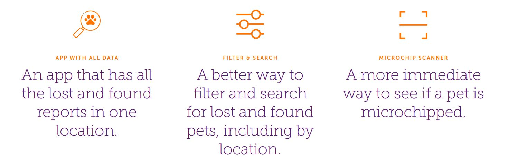

John Pechacek
UX Design ~ UI Development ~ Motion Design
Homeward
Intro
Homeward is an app idea I designed with 3 other UX designers as our final project in the SMU UX program. It is a digital lost and found platform for cats and dogs.
Discover
We picked a problem to solve that we all felt passionate about. The issue that grabbed us was lost pets. Not only is there the heartbreak and hopelessness of losing your own pet, but also the confusion of finding a lost pet.
We started researching and discovered that 1/3 of all dogs and cats go missing in their lifetimes. A shocking 80% of those missing pets are never found. Interestingly, pets that have microchips are far more likely to be found.
From this need, we identified primary and extreme users:
To develop empathy with these users, we defined pain points these users might have at different stages of the experience of using a lost and found pet app.
In addition, we conducted competitor analysis to determine what features are available through competitor apps on the market.
Finally, we interviewed potential primary and extreme users. These were a few of the key insights we gained:
Define
Based on this research, we honed in on the app's differentiating features.

We created epics and user stories to help us develop these features.
Develop
Before we started designing all the screens that would make up our app, we carefully considered each step necessary for our users to accomplish their goals. We put these steps together in the form of user flows.
We sketched out ideas for all of the screens needed to accomplish the tasks in the user flow. When we were happy with the sketches, we translated them into a lo-fi mockup using an asset pack in Adobe XD. Finally, we refined the lo-fi mockup into a testable high-fidelity design.
Deliver
We wanted to see where users would struggle to achieve their goals in our app.
To do this, we invented two different scenarios, each with a series of tasks. We asked the testers to complete each task and talk about their thought processes.
These tests were conducted at the height of the COVID pandemic, so our testing was remote. We carefully planned each session and gave our testers specific setup instructions. We observed and communicated with the testers through zoom.
Several problems with our initial design surfaced very quickly as we tested:
Conclusion
This project left us with a strong app design, ready for mobile development. If we were to take the project further we would implement the following changes:
We were encouraged by the enthusiasm our testers had for our app. They said:
About